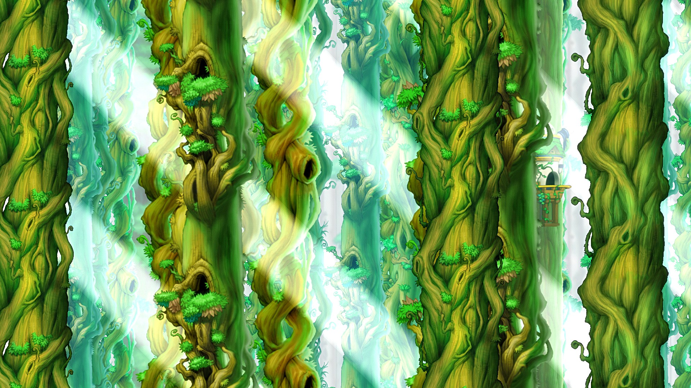

自動找怪攻擊
自動尋找附近怪物並持續攻擊， 減少重複操作，提升長時間練功效率。

SV LAB・星維實驗
支援自動找怪練功、定時補 Buff、 HP／MP 智慧補給與自動換頻， 並提供 Windows 10、Windows 11、 虛擬機支援及真人客服協助。
MAPLESTORY CLASSIC ASSISTANT
星維實驗提供楓之谷經典服專用的外掛、輔助與練功腳本功能， 協助玩家處理自動找怪攻擊、定時施放 Buff、 HP／MP 自動補給，以及偵測其他玩家後自動換頻等重複操作。
系統支援 Windows 10、Windows 11 與虛擬機環境， 並提供真人客服協助安裝、設定與問題排除。
WHY SV LAB
楓之谷經典服相關工具選擇眾多， 我們不只提供自動化功能，更重視持續維護、 使用環境支援與真人客服協助。
自動尋找附近怪物並持續攻擊， 減少重複操作，提升長時間練功效率。
依照設定時間自動施放 Buff， 維持角色狀態與穩定練功節奏。
即時偵測角色 HP 與 MP， 達到設定條件時自動使用補給品。
偵測其他玩家後自動切換頻道， 降低搶怪、干擾與長時間停滯的情況。
提供安裝、設定與問題排除協助， 遇到狀況不需要自行摸索。
支援 Windows 10、Windows 11 及常見虛擬機環境。